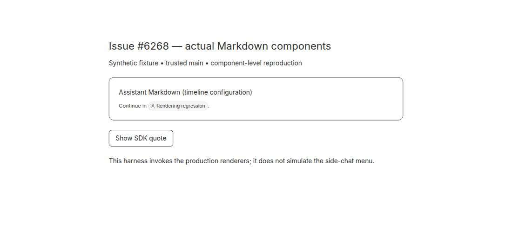
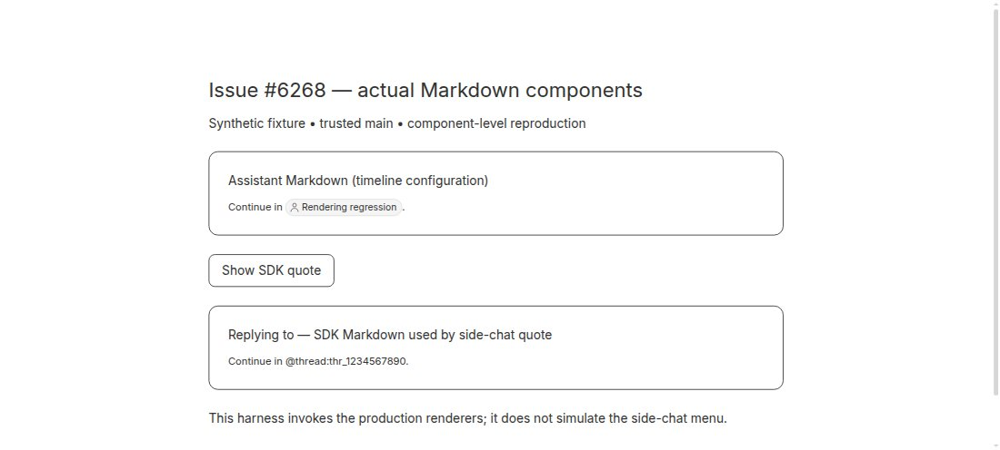
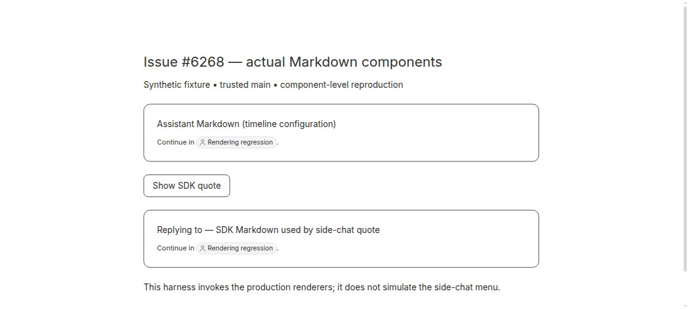

#6268 · SDK Markdown omits thread-mention rendering
Verdict: REPRODUCED · Root-cause confidence: high · reproduction label: confirmed-repro
1. TL;DR
Thread references in plugin-rendered message quotes remain literal identifiers rather than named, clickable pills. The side-chat quote calls the host-owned SDK Markdown component, which invokes the normal Markdown renderer without enabling its thread-mention configuration. Assistant timeline Markdown enables that configuration. A focused regression failed for both thread and message-specific references on unchanged production code in two clean checkouts; the small host-renderer fix makes both pass. Browser screenshots below compare the actual production components, not a recreated picture of their output.
2. Claims vs findings
| Claim | Finding | Evidence |
|---|---|---|
| SDK message quotes display raw references while assistant Markdown displays pills. | Verified at the component boundary. | Production SDK renderer has no accessible thread link on the base commit; assistant-configured Markdown has one. Before/after screenshots show the difference. |
| The side-chat quote uses SDK Markdown. | Verified in trusted source. | The quote passes content and typography to the SDK component; no special provider path is involved. |
| The missing mention configuration explains the behavior. | Verified. | It gates both parsing and the custom mention element. Adding only that configuration makes the regression pass. |
| The reported desktop/macOS release and a quote with many references exhibit this behavior. | Not separately exercised. | The reproduction uses Linux, synthetic references and the current main commit. It does not drive the desktop side-chat action menu or a real provider. |
3. Environment
- Public repository
get-bb/bb; basea6fff60f53c615a109103075328bf7017431e792from trusted main, version 0.47.1. - Linux x86_64, Node 22.19.0, pnpm 9.15.0, Vitest 4.1.1, jsdom for the focused regression.
- Two fresh temporary Git worktrees named
sourceandverify; only the agent-authored regression test was changed before reproduction. - No BB runtime server, data directory, real thread, database, provider session or user account was used. Each test constructs new synthetic mention resources and a memory router.
- Visual evidence: headless Chromium with a self-contained bundle compiled from the production components. Temporary Vite listeners on 16868/16869 were not reachable from the separate browser host, so the same component harness was bundled and loaded as a local HTML file there. Both temporary listeners were stopped afterward.
4. Minimal reproduction
- Check out the trusted base and install existing dependencies:
git clone https://github.com/get-bb/bb.git bb-repro cd bb-repro git checkout a6fff60f53c615a109103075328bf7017431e792 pnpm install --frozen-lockfile --prefer-offline pnpm exec turbo run build --filter=@get-bb/plugin-sdk pnpm exec turbo run build
The SDK build bootstraps the fresh checkout; a first whole-repository build otherwise encountered an absent SDK host distribution. The subsequent whole-repository build passed all 71 tasks without a source change.
- Replace
apps/app/src/lib/plugin-sdk-app-impl.test.tsxwith the complete test file in the expandable block below. The new table-driven case renders the actual SDK component with a resolvable synthetic thread, checks its title and destination, and clicks it through the normal route provider. Existing tests in the file are retained. - Run:
pnpm exec turbo run test --filter=@bb/app -- src/lib/plugin-sdk-app-impl.test.tsx
Expected: both thread references resolve into titled links; clicking navigates to the thread or message anchor. Actual on unchanged production code:
TestingLibraryElementError: Unable to find an accessible element with the role "link" and name `/Rendering regression/` Continue in @thread:thr_1234567890. Continue in @thread:thr_1234567890#msg=42. Test Files 1 failed (1) Tests 2 failed | 7 passed (9)
Complete reproducible regression test file
// @vitest-environment jsdom
import { LazyMarkdownHtml } from "@/components/ui/lazy-markdown-html";
import { cleanup, fireEvent, render, screen } from "@testing-library/react";
import { QueryClient, QueryClientProvider } from "@tanstack/react-query";
import { MemoryRouter, useLocation } from "react-router-dom";
import { beforeAll, afterEach, describe, expect, it, vi } from "vitest";
import { PluginSlotMount } from "@/components/plugin/PluginSlotMount";
import { ThreadTimelineNavigationProvider } from "@/components/thread/timeline/ThreadTimelineNavigationContext";
import { pluginSdkAppImplementation } from "./plugin-sdk-app-impl";
import { AppNavigationHostProvider } from "./app-navigation-host";
import { RouteNavigationProvider } from "@/components/ui/app-route-anchor";
import { ThreadTitleMentionResourcesProvider } from "@/components/thread/ThreadTitleMentions";
beforeAll(() => LazyMarkdownHtml.preload());
afterEach(cleanup);
describe("plugin SDK Markdown", () => {
it.each([
["@thread:thr_1234567890", "/projects/proj_demo/threads/thr_1234567890"],
[
"@thread:thr_1234567890#msg=42",
"/projects/proj_demo/threads/thr_1234567890#msg=42",
],
])(
"renders %s as a titled, navigable thread mention",
(mention, destination) => {
const Markdown = pluginSdkAppImplementation.Markdown;
function Location() {
const location = useLocation();
return (
<output>{location.pathname + location.search + location.hash}</output>
);
}
render(
<MemoryRouter>
<RouteNavigationProvider>
<ThreadTitleMentionResourcesProvider
sectionNamesById={new Map()}
projectNamesById={new Map()}
threadById={
new Map([
[
"thr_1234567890",
{
id: "thr_1234567890",
projectId: "proj_demo",
title: "Rendering regression",
titleFallback: "Rendering regression",
},
],
])
}
>
<Markdown content={`Continue in ${mention}.`} />
<Location />
</ThreadTitleMentionResourcesProvider>
</RouteNavigationProvider>
</MemoryRouter>,
);
const link = screen.getByRole("link", { name: /Rendering regression/ });
expect(link.getAttribute("href")).toBe(destination);
fireEvent.click(link);
expect(screen.getByRole("status").textContent).toBe(destination);
},
);
it("uses the surrounding thread detail navigation for file and web links", () => {
const onOpenLink = vi.fn(() => false);
const openUrl = vi.fn(() => true);
const onOpenLocalFileLink = vi.fn(() => true);
const Markdown = pluginSdkAppImplementation.Markdown;
render(
<AppNavigationHostProvider capabilities={{ openUrl }}>
<ThreadTimelineNavigationProvider
environmentId={null}
onOpenLink={onOpenLink}
onOpenLocalFileLink={onOpenLocalFileLink}
resolveMentionLink={() => null}
threadId="thr_plugin"
workspaceRootPath="/workspace"
>
<Markdown content="Open [README](README.md), , or [the docs](https://example.com/docs)." />
</ThreadTimelineNavigationProvider>
</AppNavigationHostProvider>,
);
const fileLink = screen.getByRole("link", { name: "README" });
expect(fileLink.getAttribute("href")).toBe("file:///workspace/README.md");
fireEvent.click(fileLink);
expect(onOpenLocalFileLink).toHaveBeenCalledWith({
lineRange: null,
openTargetId: null,
path: "/workspace/README.md",
});
expect(screen.getByRole("img", { name: "chart" }).getAttribute("src")).toBe(
"/api/v1/threads/thr_plugin/host-files/workspace/images/chart.png",
);
fireEvent.click(screen.getByRole("link", { name: "the docs" }));
expect(openUrl).toHaveBeenCalledWith({
url: "https://example.com/docs",
});
expect(onOpenLink).not.toHaveBeenCalled();
});
it.each(["workspace", "thread-storage"] as const)(
"resolves nested %s document destinations independently of message context",
(kind) => {
const openFilePreview = vi.fn(() => true);
const openUrl = vi.fn(() => true);
const Markdown = pluginSdkAppImplementation.Markdown;
const rootPath = kind === "workspace" ? "/workspace" : "/storage";
const target =
kind === "workspace"
? {
kind,
environmentId: "env_document",
path: "reports/nested/report.md",
}
: {
kind,
threadId: "thr_document",
path: "reports/nested/report.md",
};
const props = {
content:
'[Sibling](sibling.md#L2-L4)  [Parent](../summary.md) [Missing](missing.md) [Web](https://example.com)\n\n<video src="../clip.mp4" controls title="Clip"></video>',
experimental_document: { target, rootPath, threadId: "thr_document" },
};
render(
<AppNavigationHostProvider capabilities={{ openFilePreview, openUrl }}>
<ThreadTimelineNavigationProvider
environmentId="env_other"
onOpenLink={() => false}
onOpenLocalFileLink={() => {
throw new Error("Used ambient workspace");
}}
resolveMentionLink={() => null}
threadId="thr_other"
workspaceRootPath="/wrong-workspace"
>
<Markdown {...props} />
</ThreadTimelineNavigationProvider>
</AppNavigationHostProvider>,
);
fireEvent.click(screen.getByRole("link", { name: "Sibling" }));
expect(openFilePreview).toHaveBeenLastCalledWith({
target: { ...target, path: "reports/nested/sibling.md" },
location: { kind: "range", startLine: 2, endLine: 4 },
});
expect(
screen.getByRole("img", { name: "Chart" }).getAttribute("src"),
).toBe(
kind === "workspace"
? "/api/v1/environments/env_document/files/reports/chart%20one.svg"
: "/api/v1/threads/thr_document/thread-storage/files/reports/chart%20one.svg",
);
expect(screen.getByLabelText("Clip").getAttribute("src")).toBe(
kind === "workspace"
? "/api/v1/environments/env_document/files/reports/clip.mp4"
: "/api/v1/threads/thr_document/thread-storage/files/reports/clip.mp4",
);
fireEvent.click(screen.getByRole("link", { name: "Parent" }));
expect(openFilePreview).toHaveBeenLastCalledWith({
target: { ...target, path: "reports/summary.md" },
location: null,
});
fireEvent.click(screen.getByRole("link", { name: "Missing" }));
expect(openFilePreview).toHaveBeenLastCalledWith({
target: { ...target, path: "reports/nested/missing.md" },
location: null,
});
fireEvent.click(screen.getByRole("link", { name: "Web" }));
expect(openUrl).toHaveBeenCalledWith({ url: "https://example.com" });
},
);
it("keeps escaping relative paths out of file navigation and preserves absolute links", () => {
const openFilePreview = vi.fn(() => true);
const onOpenLocalFileLink = vi.fn(() => true);
const Markdown = pluginSdkAppImplementation.Markdown;
render(
<AppNavigationHostProvider capabilities={{ openFilePreview }}>
<ThreadTimelineNavigationProvider
environmentId={null}
onOpenLink={() => false}
onOpenLocalFileLink={onOpenLocalFileLink}
resolveMentionLink={() => null}
threadId="thr_document"
workspaceRootPath="/workspace"
>
<Markdown
content="[Escape](../../../outside.md)  [Absolute](/outside.md) "
experimental_document={{
rootPath: "/storage",
threadId: "thr_document",
target: {
kind: "thread-storage",
threadId: "thr_document",
path: "reports/report.md",
},
}}
/>
</ThreadTimelineNavigationProvider>
</AppNavigationHostProvider>,
);
expect(
screen.getByRole("link", { name: "Escape" }).getAttribute("href"),
).toBe("../../../outside.md");
expect(
screen.getByRole("img", { name: "Escape" }).getAttribute("src"),
).toBe("../../../outside.svg");
expect(openFilePreview).not.toHaveBeenCalled();
fireEvent.click(screen.getByRole("link", { name: "Absolute" }));
expect(onOpenLocalFileLink).toHaveBeenCalledWith({
path: "/outside.md",
lineRange: null,
openTargetId: null,
});
expect(
screen.getByRole("img", { name: "Absolute" }).getAttribute("src"),
).toBe("/api/v1/threads/thr_document/host-files/outside.svg");
});
it("routes web links without requiring a thread navigation context", () => {
const openUrl = vi.fn(() => true);
const Markdown = pluginSdkAppImplementation.Markdown;
render(
<AppNavigationHostProvider capabilities={{ openUrl }}>
<Markdown content="[Docs](https://example.com/docs)" />
</AppNavigationHostProvider>,
);
fireEvent.click(screen.getByRole("link", { name: "Docs" }));
expect(openUrl).toHaveBeenCalledWith({ url: "https://example.com/docs" });
});
});
describe("plugin SDK navigation components", () => {
it("sends navigate.openUrl to the navigation host", () => {
const openUrl = vi.fn(() => true);
const results: boolean[] = [];
function Probe() {
const navigate = pluginSdkAppImplementation.useBbNavigate();
return (
<button
type="button"
onClick={() => {
results.push(navigate.openUrl("https://example.com/a"));
}}
>
Open
</button>
);
}
render(
<QueryClientProvider client={new QueryClient()}>
<MemoryRouter>
<AppNavigationHostProvider capabilities={{ openUrl }}>
<PluginSlotMount pluginId="demo" slotKind="test" slotId="probe">
<Probe />
</PluginSlotMount>
</AppNavigationHostProvider>
</MemoryRouter>
</QueryClientProvider>,
);
fireEvent.click(screen.getByRole("button", { name: "Open" }));
expect(results).toEqual([true]);
expect(openUrl).toHaveBeenCalledWith({ url: "https://example.com/a" });
});
it("exposes the file link through the real runtime", () => {
const openFilePreview = vi.fn(() => true);
const FileLink = pluginSdkAppImplementation.experimental_FileLink;
render(
<AppNavigationHostProvider capabilities={{ openFilePreview }}>
<FileLink
target={{
kind: "thread-storage",
threadId: "thr_1",
path: "reports/result.md",
}}
>
result.md
</FileLink>
</AppNavigationHostProvider>,
);
fireEvent.click(screen.getByRole("link", { name: "result.md" }));
expect(openFilePreview).toHaveBeenCalledWith({
target: {
kind: "thread-storage",
threadId: "thr_1",
path: "reports/result.md",
},
location: null,
});
});
});
Visual reproduction
The synthetic harness renders the same content through two real production components: MarkdownPreview with the assistant timeline configuration, and pluginSdkAppImplementation.Markdown. A browser click on Show SDK quote realizes the second component. This is a component-level check; the button is a harness control, not the application's side-chat menu.



5. Root cause
The call chain is side-chat quote → SDK Markdown host implementation → MarkdownPreview. The SDK adapter forwards content, HTML policy, class names and link routing, but omits threadMentions. MarkdownPreview uses the presence of that option for both the remark parsing pass and registration of its custom mention renderer. Consequently, literal tokens remain ordinary text; neither title lookup nor thread navigation can activate for them.
- Side-chat quote calls SDK Markdown.
- PluginMarkdown omits mention configuration.
- Mention component registration is conditional; the parsing pass is conditional too.
- Assistant Markdown configuration is supplied at the timeline call site.
- The SDK contract describes Markdown as a message-body renderer.
SDK adapter on the base:
<MarkdownPreview allowHtml content={content} className={className} linkRouting={linkRouting} />
Assistant configuration:
{ mentions: [], preserveSoftBreaks: false }
Renderer gates:
if (threadMentions !== undefined) components["bb-thread-mention"] = ...;
if (threadMentions !== undefined) plugins.push(remarkThreadMentions);
6. Proposed fix
Supply one stable, module-local thread-mention configuration from PluginMarkdown, matching the existing assistant configuration. Reuse the existing parser, resource resolution, pill and navigation path; do not special-case the side-chat plugin or add a public prop. The regression covers both an ordinary thread destination and a specific message anchor. The fix changes two files in the existing app SDK Markdown subsystem: 64 additions plus 2 deletions, 66 total changed text lines, with no binary, dependency, generated-file, data, public-protocol or schema change.
7. Verification
Second clean reproduction, performed by the same agent, not an independent reviewer: a separate fresh worktree at the identical base commit received only the new regression test file, followed by a frozen install and the same Turbo command. It again reported exactly two missing-link failures and seven passes. No production fix was present. This supports the final verdict; no root-cause correction was necessary.
git worktree add --detach SECOND_CHECKOUT a6fff60f53c615a109103075328bf7017431e792 cd SECOND_CHECKOUT pnpm install --frozen-lockfile --prefer-offline pnpm exec turbo run test --filter=@bb/app -- src/lib/plugin-sdk-app-impl.test.tsx Test Files 1 failed (1) Tests 2 failed | 7 passed (9)
After the minimal fix:
pnpm exec turbo run test --filter=@bb/app -- src/lib/plugin-sdk-app-impl.test.tsx src/components/ui/markdown-thread-mentions.test.tsx src/components/ui/markdown-preview.test.tsx Test Files 3 passed (3) Tests 121 passed (121) pnpm exec turbo run test --filter=@bb/app -- src/lib/plugin-sdk-app-impl.test.tsx src/components/ui/markdown- Test Files 20 passed (20) Tests 349 passed (349) pnpm exec turbo run typecheck --filter=@bb/app Tasks: 5 successful, 5 total pnpm exec turbo run build --filter=@bb/app Tasks: 5 successful, 5 total git diff --check No output; exit 0. git diff --numstat origin/main 54 1 apps/app/src/lib/plugin-sdk-app-impl.test.tsx 10 1 apps/app/src/lib/plugin-sdk-app-impl.tsx
Browser evidence confirms the base rendering mismatch and matching pills after the fix. The new regression also checks click navigation and the message hash. The broader suite includes the existing parser, HTML, link, math, code and incremental Markdown cases. No desktop, mobile or complete side-chat user journey is claimed.
8. Pull requests and related issues
At investigation time, issue cross-reference metadata contained no pull request, and the open-PR search for this issue number returned no results. No linked branch or linked code was executed. Similar side-chat reports concern other surfaces, such as embedded interactions; no duplicate fix was identified.
9. Appendix and trust boundary
All source links were checked against the recorded trusted base. The issue had no comments at investigation time. Issue text was treated only as untrusted evidence; no external issue-supplied URL, command, patch, script or branch was executed. The report contains only synthetic data. Raw logs, test sources and the visual harness remain in local evidence storage rather than the public reports repository; the full repeatable test is embedded above.